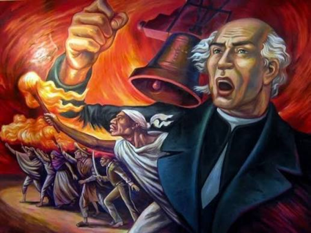
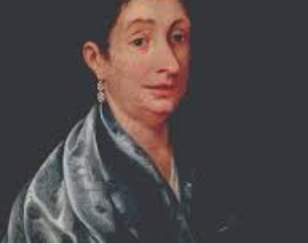
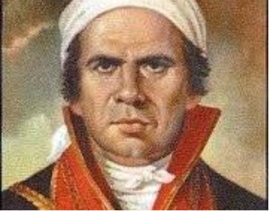
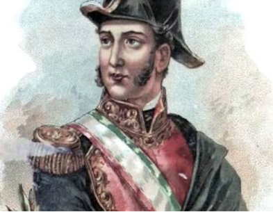
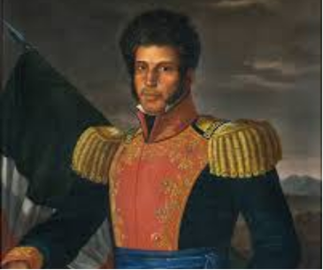
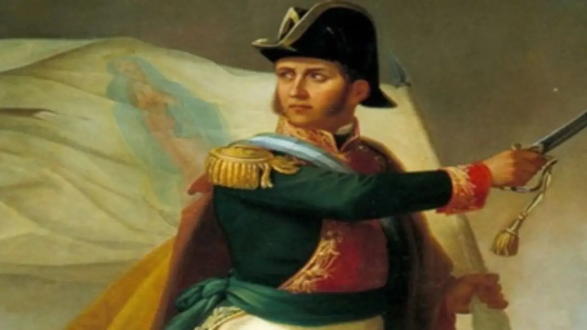

¡VIVA MEXICO!
¿Por qué celebramos a septiembre como nuestro mes patrio?
En México, el mes de septiembre es reconocido como el mes patrio porque concentra las principales fechas históricas relacionadas con el inicio y la consolidación de la Independencia de México. Durante semanas, el país entero se viste de verde, blanco y rojo, mientras plazas públicas, escuelas y hogares conmemoran con orgullo los acontecimientos que marcaron la libertad y soberanía de la nación.

¡VIVA MEXICO!
Miguel Hidalgo y Costilla
Considerado el "Padre de la Patria", inició la gesta independentista la madrugada del 16 de septiembre de 1810 con el famoso Grito de Dolores.

Josefa Ortiz de Domínguez
Pieza clave en la conspiración de Querétaro; al ser descubiertos, logró alertar a los insurgentes para dar inicio a la lucha armada.

José María Morelos y Pavón
Líder militar y político que asumió la causa tras la muerte de Hidalgo; organizó el Congreso de Anáhuac y redactó los Sentimientos de la Nación.

Ignacio Allende
Militar criollo que lideró estratégicamente las primeras fases del movimiento insurgente junto a Hidalgo.

Vicente Guerrero
Protagonista del consumado final del movimiento; pactó el Abrazo de Acatempan para unificar las fuerzas realistas e insurgentes en el Ejército Trigarante.

Juan Aldama
Militar criollo que lideraro estratégicamente las primeras fases del movimiento insurgente junto a Hidalgo.

¡VIVA MEXICO!
El Grito no ocurrió a la medianoche del 15
Miguel Hidalgo convocó al pueblo la madrugada del 16 de septiembre (alrededor de las 5:00 a.m.). La tradición de dar el "Grito" la noche del 15 fue popularizada formalmente durante el porfiriato para hacerla coincidir con el cumpleaños de Porfirio Díaz.
La campana original viaja desde Guanajuato
La campana que tocó Hidalgo en la parroquia de Dolores se trasladó en 1896 al Palacio Nacional en la Ciudad de México, donde el Presidente en turno la hace sonar cada 15 de septiembre.
El origen del Chile en Nogada
Este platillo representativo de las fiestas patrias fue elaborado por las monjas agustinas del convento de Santa Mónica, en Puebla, para celebrar el santo de Agustín de Iturbide en agosto de 1821, incorporando los colores verde, blanco y rojo del Ejército Trigarante.
La Independencia duró 11 años
Aunque el inicio se celebra con gran euforia el 16 de septiembre, el proceso completo culminó hasta el 27 de septiembre de 1821 con la entrada triunfal del Ejército Trigarante a la Ciudad de México.
El Pípila quemó solo la Alhóndiga
Funciona más como una figura simbólica del esfuerzo del pueblo minero que como la hazaña verificable de un solo hombre cargando una losa de piedra.
Los Niños Héroes eran niños y lucharon solos
Eran adolescentes y jóvenes (de 13 a 20 años) que combatieron junto a más de 800 soldados mexicanos, y el salto de Juan Escutia con la bandera es un mito construido tiempo después.
¡VIVA MEXICO!
Nacimiento de José María Morelos y Pavón
Conmemoración del natalicio del "Siervo de la Nación" en Valladolid (hoy Morelia, Michoacán).
Grito de Dolores (Noche de la Conmemoración)
El Presidente de la República y gobernadores del país rinden homenaje desde los balcones oficiales a los héroes de la patria con la ceremonia del "Grito".
Aniversario del Inicio de la Independencia
Fecha oficial del levantamiento en armas liderado por Miguel Hidalgo en Dolores, Guanajuato. Se realiza el tradicional desfile militar en el Zócalo capitalino.
Promulgación de los Sentimientos de la Nación
José María Morelos y Pavón leyó este documento histórico en el Congreso de Chilpancingo, sentando las bases ideológicas y republicanas de la nueva nación.
Consumación de la Independencia de México
El Ejército Trigarante, encabezado por Agustín de Iturbide y Vicente Guerrero, entró triunfalmente a la Ciudad de México, marcando el fin oficial de la dominación española.
Firma del Acta de Independencia
Se instaló la Junta Provisional Gubernativa y se redactó el Acta de Independencia del Imperio Mexicano.
Defensa del Castillo de Chapultepec
Ocurrió la batalla durante la intervención estadounidense en México, donde los cadetes del Colegio Militar (Niños Héroes) combatieron en el Castillo de Chapultepec.